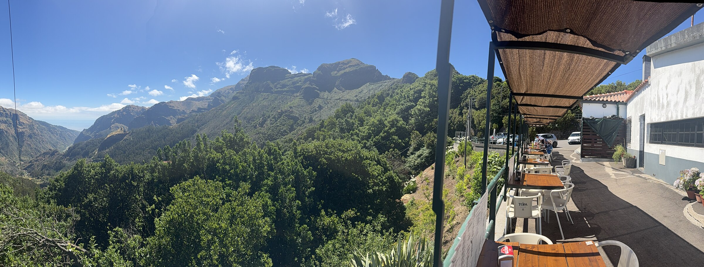
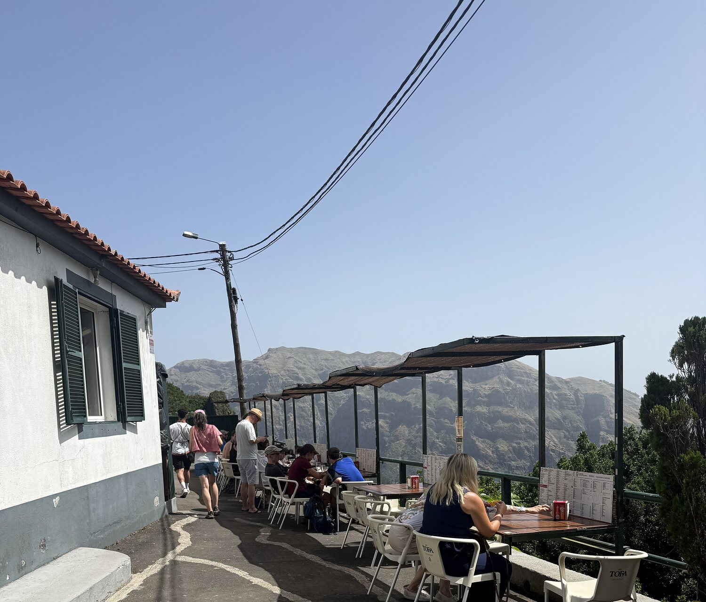
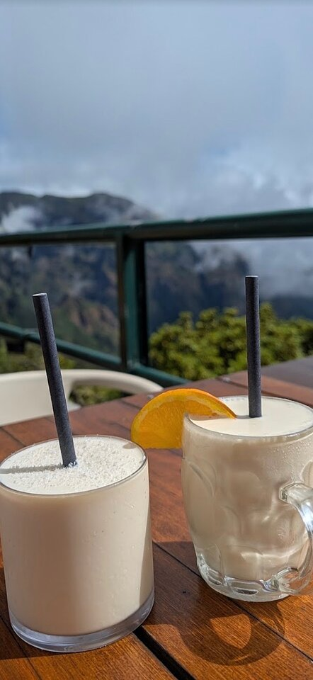
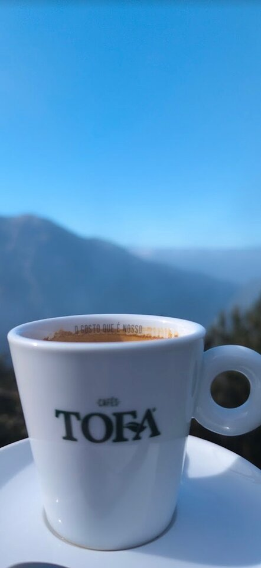
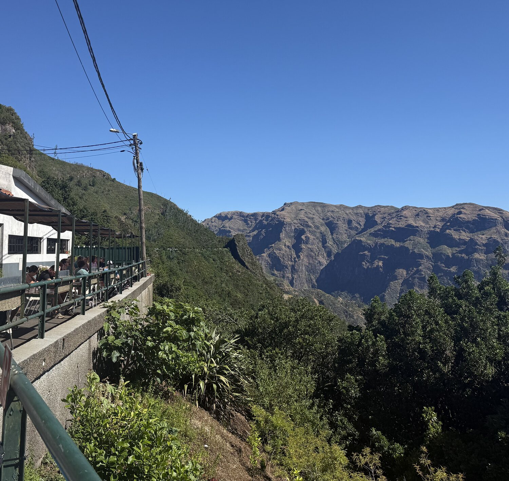
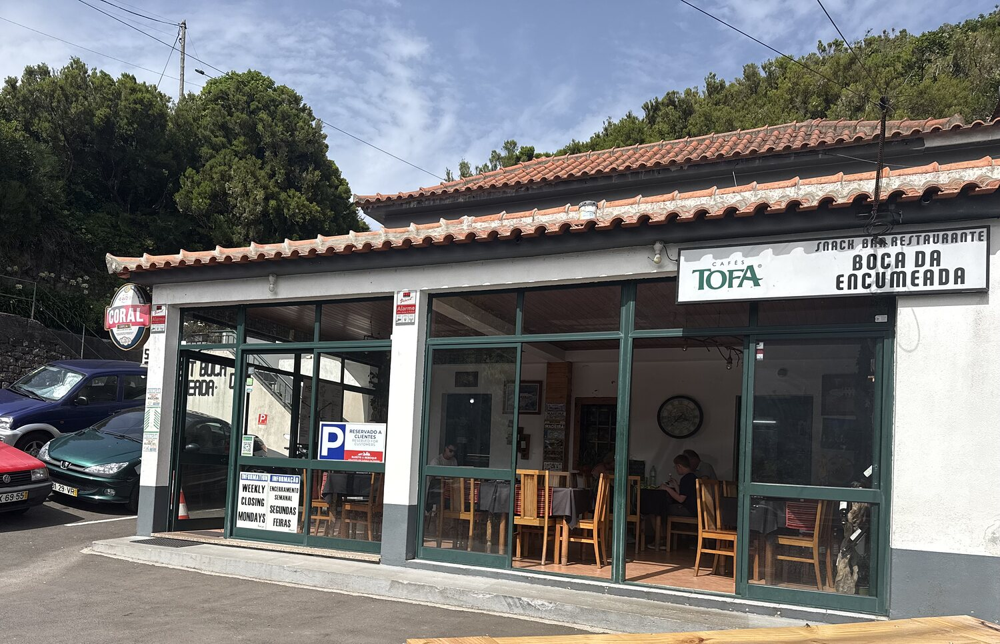
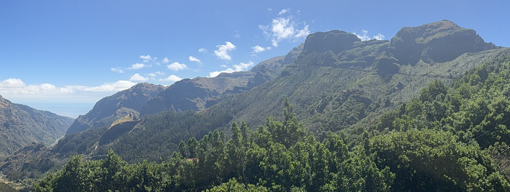

A family-run bar and restaurant, perched right at the highest point of the road linking Madeira's two coastlines. Poncha is what we're known for — traditional, muddled to order, the proper way — though plenty of visitors say the espetada and the view give it a run for its money. We're a regular stop for jeep tours and road-trippers crossing the island's interior: about 40 minutes up from Funchal, or 15 minutes over the ridge from São Vicente.
The pass sits in a sea of laurisilva, the UNESCO-listed laurel forest that once covered southern Europe and survives here on every slope. Step off the terrace and you're at the trailhead for some of Madeira's best-loved levada walks — the Vereda da Encumeada and the Caminho do Pináculo e Folhadal both start nearby.
We've set up right at that viewpoint — a terrace of wooden tables under the awning, the mountains dropping away on both sides, and a kitchen turning out the kind of food that makes people pull over a second time on the way back down.

No fuss and no shortcuts — espetada over the fire, poncha muddled at the bar, and cake that tastes homemade because it is. Here's what regulars come back for.
Skewered beef, grilled over the open fire the traditional way. Reviewers have called it the best on the island — we're not going to argue.
Madeira's traditional muddled spirit, made to order — the proper way to toast a mountain view. Fresh passion fruit juice for the non-drinkers.
A hearty pepper steak, and a cheese fondue that keeps coming up in reviews — good sharing food after a levada walk.
Chicken and steak sandwiches, tomato and fish soup — simple, generous, made for hikers coming off the trail hungry.
Coffee done properly — galão and café chinesa — next to a slice of homemade cake. Best excuse to linger over the view.
Menu changes with the season and the catch. Give us a call before you make the drive up.
Call +351 291 952 319


"Best espetada I have ever had. Cheese fondue is excellent."
"Very nice place to stay for a moment when you are thirsty and hungry. Great tap beer, delicious food, friendly staff."
"Fresh & delicious soups — and the fresh passion fruit juice was to die for!"
"Amazing sandwiches and great view."
"The cake was homemade and delicious and the galão and chinesa coffees were very good."
Read the rest of our reviews, or leave your own.
All reviews on TripAdvisor →
